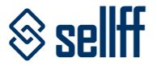
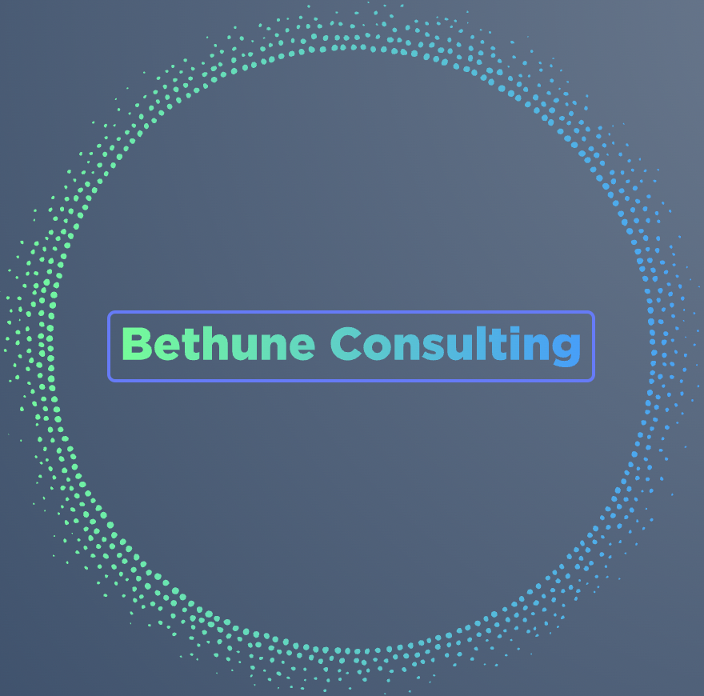
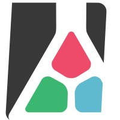

Projects and employment

Crypto currency ATM back-end with Microservice architecture
Client work - Bitstop - (2022 - ONGOING)
- Designed and developed encryption at rest for sensitive crypto wallet data
- Developed and configured Rabbit MQ event publishing and handling
- Created and managed Circle CI pipelines
- Developed and integration tested REST API endpoints
Technologies: ASP.NET Core, REST, CircleCI, Docker, Docker compose, Rabbit MQ, Insomnia
- Developed and configured Rabbit MQ event publishing and handling
- Created and managed Circle CI pipelines
- Developed and integration tested REST API endpoints
Technologies: ASP.NET Core, REST, CircleCI, Docker, Docker compose, Rabbit MQ, Insomnia
Criminal records management site using Blazor
Client work - Atlas Technologies (2020 - ONGOING)
- Created complex user interfaces using Blazor components
- Built custom Blazor components (e.g.: for fax and phone input fields and custom controls)
- Created REST API endpoints for the back-end part of the website
Technologies: Blazor, .NET 5, SCSS, REST, Swagger, Entity Framework, SQL, Azure DevOps
- Built custom Blazor components (e.g.: for fax and phone input fields and custom controls)
- Created REST API endpoints for the back-end part of the website
Technologies: Blazor, .NET 5, SCSS, REST, Swagger, Entity Framework, SQL, Azure DevOps

Business marketplace website using React and .NET Core
Client work - Sellff (2020 - ONGOING)
- Created complex user interfaces using React
- Built a tool for importing business listings with scraped profile images
- Implemented Stripe Connect integration
- Set up automated SQL email reports with usage statistics
Technologies: React, .NET Core, SQL Server, Stripe connect
- Built a tool for importing business listings with scraped profile images
- Implemented Stripe Connect integration
- Set up automated SQL email reports with usage statistics
Technologies: React, .NET Core, SQL Server, Stripe connect
SOAP Website with .NET 5
Client work - Atlas Technologies - (2021 - ONGOING)
- Designed and created a SOAP website using SoapCore to handle Soap1.1 and Soap1.2 requests from legacy third party client applications
- Created build and release pipelines in Azure DevOps
- Ensured the quality with unit tests and by simulating client requests using SoapUI.
Technologies: ASP.NET Core, SoapCore, SoapUI, Azure DevOps pipelines
- Created build and release pipelines in Azure DevOps
- Ensured the quality with unit tests and by simulating client requests using SoapUI.
Technologies: ASP.NET Core, SoapCore, SoapUI, Azure DevOps pipelines

Senior software consultant
Client work - Bethune Consulting - (2021 - ONGOING)
- Built and improved client website UIs using React
- Created build and release pipelines in Netlify
- Deployed and set up edX website in AWS EC2 instance
Technologies: React, Gatsby, Netlify, AWS Route 53, AWS EC2
- Created build and release pipelines in Netlify
- Deployed and set up edX website in AWS EC2 instance
Technologies: React, Gatsby, Netlify, AWS Route 53, AWS EC2

.NET development with Orchard Core CMS
Client work - Lombiq - (2021 - 2022)
- Worked on the development of a Visual Studio Extension
- Implemented new features in various client CMS websites
- Developed UI features using jQuery
Technologies: ASP.NET Core, Orchard CMS, jQuery, Javascript
- Implemented new features in various client CMS websites
- Developed UI features using jQuery
Technologies: ASP.NET Core, Orchard CMS, jQuery, Javascript
Xamarin and React Native app for healthcare company
Client work - Atlas Technologies - (2020 - PRESENT)
- Created certificates and published app to iOS and Android stores
- Designed custom components and renderers for multiple components
- Worked with Xamarin App-Linking (deep-linking)
Technologies: Xamarin, React Native, Android, iOS
- Designed custom components and renderers for multiple components
- Worked with Xamarin App-Linking (deep-linking)
Technologies: Xamarin, React Native, Android, iOS
Technical Lead
Client work - BCM - (2015 - 2022)
- Planned and coded a complex data migration tool affecting multiple systems.
- Achieved huge performance gains by profiling and optimizing a very large legacy system.
- Managed and supervised the work of junior programmers on multiple small and mid-sized projects.
- Worked on creating a complex Angular-based front-end for a telecommunications network diagram creator tool.
- Created a project management application using XAF.
Technologies: SQL, DevExpress, Knockout.js, Angular, ASP.NET MVC
- Achieved huge performance gains by profiling and optimizing a very large legacy system.
- Managed and supervised the work of junior programmers on multiple small and mid-sized projects.
- Worked on creating a complex Angular-based front-end for a telecommunications network diagram creator tool.
- Created a project management application using XAF.
Technologies: SQL, DevExpress, Knockout.js, Angular, ASP.NET MVC
Ecommerce jewelry store
Own project - www.elenora.hu - (2019 - ONGOING)
- Built an automated inventory management system.
- Created interactive bracelet designer on the UI for the customers.
- Implemented automatic importing of product data from Google Sheets.
- Integrated with various services such as Facebook API, Google Shopping, billing system, and payment gateways.
- Wrote Python script for generating 3D rendered product images and videos for bracelets created by a designer tool in the admin panel.
- Built automated newsletter sending functionality.
Technologies: ASP.NET Core MVC, Angular 8, Python, Blender 3D, jQuery, SCSS
- Created interactive bracelet designer on the UI for the customers.
- Implemented automatic importing of product data from Google Sheets.
- Integrated with various services such as Facebook API, Google Shopping, billing system, and payment gateways.
- Wrote Python script for generating 3D rendered product images and videos for bracelets created by a designer tool in the admin panel.
- Built automated newsletter sending functionality.
Technologies: ASP.NET Core MVC, Angular 8, Python, Blender 3D, jQuery, SCSS